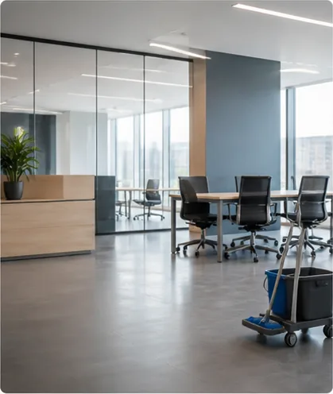
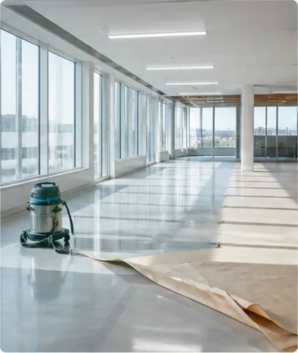
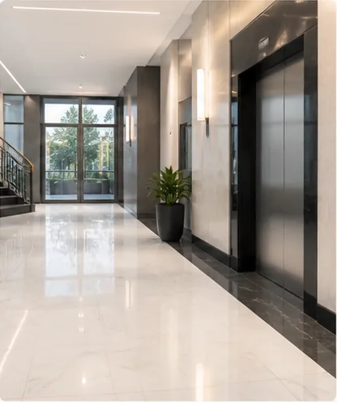
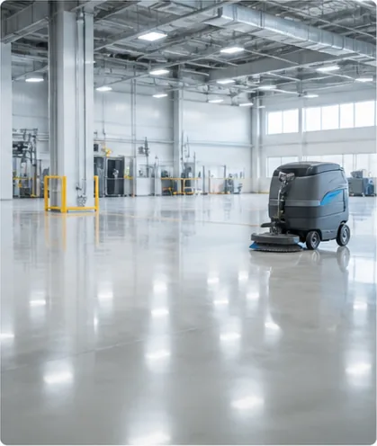

Au service des professionnels, collectivités locales & syndics
Propreté professionnelle en Île-de-France
NETINDUS structure, pilote et contrôle vos prestations d’entretien avec l’exigence attendue par les sites tertiaires, industriels et collectifs.
Vos locaux accueillent vos équipes, vos clients et vos partenaires. NETINDUS en prend soin avec des dispositifs adaptés à vos usages réels, à vos horaires et à vos exigences de qualité.
Depuis près de 40 ans, NETINDUS construit des prestations fiables, précises et durables pour les sites professionnels en Île-de-France.
QUALIPROPRE traduit notre niveau d'exigence : organisation claire, suivi des interventions et amélioration continue des pratiques terrain.
Les équipes sont encadrées, formées aux contraintes de chaque site et suivies par un responsable capable d'ajuster rapidement les interventions.
Un socle d’entretien fiable, modulable selon vos espaces, vos flux et vos niveaux de criticité.

01Entretien courant des bureaux, espaces d’accueil, salles de réunion, sanitaires et zones partagées.
Parlons-en
02Remise en état, nettoyage ponctuel et accompagnement après travaux pour livrer des espaces prêts à l’usage.
Parlons-en
03Propreté régulière des halls, circulations, ascenseurs et zones collectives avec une attention forte portée à l’image du lieu.
Parlons-en
04Interventions adaptées aux contraintes d’exploitation, de sécurité et de fréquence propres aux environnements techniques.
Parlons-enDes prestations cadrées, contrôlées et ajustées dans le temps.
Une équipe structurée pour maintenir la qualité même lorsque vos besoins évoluent.
Des dispositifs adaptés aux horaires, aux flux et aux contraintes de vos sites.
NETINDUS privilégie une relation de terrain : diagnostic clair, prestations personnalisées, suivi régulier et amélioration continue.
Un plan d’intervention bâti selon vos espaces, vos usages et vos priorités.
Des contrôles et échanges réguliers pour maintenir le niveau attendu.
Un interlocuteur identifié et une relation fluide avec vos équipes.
Une démarche attentive aux pratiques sociales, environnementales et de sécurité.
Bureaux, halls, circulations, sites mixtes ou environnements techniques : la propreté devient un signal de sérieux immédiatement perceptible.
Les décideurs recherchent un partenaire fiable, réactif et capable de tenir ses engagements dans la durée.
“Une relation simple, des équipes présentes et une qualité constante sur nos espaces communs. C’est exactement ce que nous attendons d’un partenaire propreté.”
Gestionnaire immobilier“NETINDUS sait adapter les interventions aux contraintes du site. Les échanges sont clairs et le suivi donne confiance.”
Responsable services généraux“La remise en état après travaux a été menée avec méthode. Les locaux ont pu être réouverts dans de très bonnes conditions.”
Direction administrative“Les équipes interviennent avec discrétion, même sur des plages horaires contraintes. Le site reste accueillant sans perturber notre activité.”
Responsable exploitation“Nous apprécions la régularité du suivi et la réactivité quand une demande urgente se présente. Les engagements sont tenus.”
Gestionnaire de site tertiaire“Après plusieurs prestations ponctuelles, nous avons confié l’entretien récurrent à NETINDUS. La qualité est stable et les échanges sont simples.”
Direction des opérationsOui. NETINDUS intervient auprès des professionnels : entreprises, collectivités, syndics, sites tertiaires et environnements industriels, avec des prestations adaptées aux usages et contraintes de chaque site.
Oui. Le dispositif peut être organisé selon vos horaires, vos flux de passage et vos contraintes d’exploitation.
La prestation repose sur un cadrage initial, des contrôles réguliers et une communication suivie avec l’interlocuteur du site.
Décrivez votre besoin : type de locaux, surface, fréquence souhaitée et contraintes particulières. L'équipe Netindus vous recontacte pour préciser votre demande et établir un devis adapté.